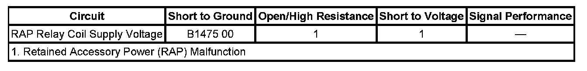

B1475
DTC B1475
DTC DESCRIPTOR
DTC B1475 00: Retained Accessory Power Circuit
DIAGNOSTIC FAULT INFORMATION

Perform the Diagnostic System Check - Vehicle prior to using this diagnostic procedure. Initial Inspection and Diagnostic Overview
CIRCUIT/SYSTEM DESCRIPTION
The body control module (BCM) is the power mode master and will monitor the status of the ignition switch and the doors. When necessary conditions are met, the BCM provides battery voltage to specific components for a predetermined amount of time. The retained accessory power (RAP) mode will provide battery voltage to the sunroof module (if equipped) or the special equipment option (SEO) RAP relay (if equipped).
CONDITIONS FOR RUNNING THE DTC
- The system voltage is between 9-16 volts.
- The DTC can only set when the output is actively being requested by the module.
CONDITIONS FOR SETTING THE DTC
The DTC will set only when the module requests the output and there is a short to ground detected in the RAP supply voltage circuit.
ACTION TAKEN WHEN THE DTC SETS
The BCM output driver will be shut down and not supply voltage to the circuit.
CONDITIONS FOR CLEARING THE DTC
- The current DTC will clear when the module request for the output is removed or the malfunction is no longer present.
- A history DTC clears when the module ignition cycle counter reaches the reset threshold of 50, without a repeat of the malfunction.
DIAGNOSTIC AIDS
- The SEO RAP relay is permanently soldered to the junction block-left I/P and is non-serviceable.
- The RAP mode for the radio and door modules is a separate function and will still operate properly.
- Use the DMM MIN/MAX function to capture/locate intermittent conditions.
CIRCUIT/SYSTEM TESTING
1. Test the RAP mode control circuit for a short to ground.
- If a condition exists, make the appropriate repair.
2. If the circuit tests normal and the DTC is current, replace the BCM.
REPAIR INSTRUCTIONS
Perform the Diagnostic Repair Verification after completing the diagnostic procedure. Verification Tests
Control Module References for BCM replacement, setup, and programming Programming and Relearning